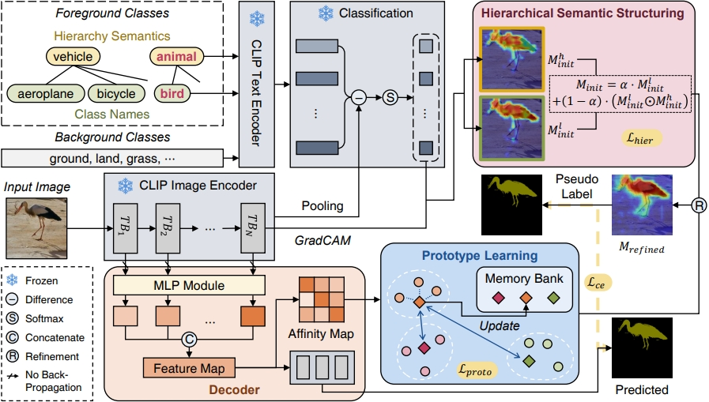
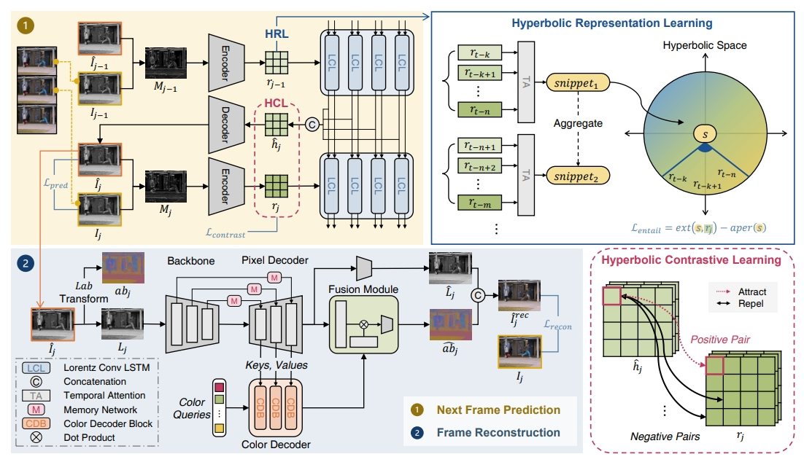
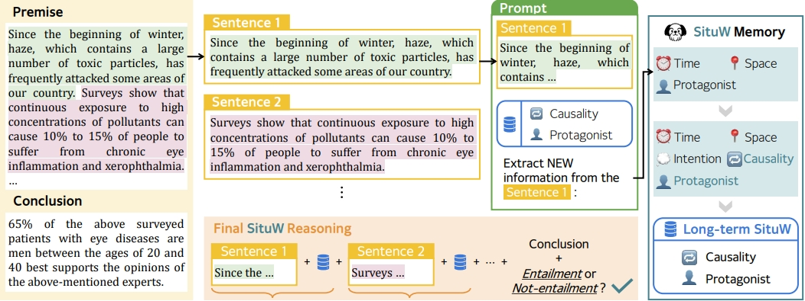

About
Hi! I’m a Ph.D. student in the Department of Artificial Intelligence at Yonsei University in Seoul, South Korea. I’m part of the Soft Computing Laboratory, and my advisor is Professor Sung-Bae Cho. I’m interested in computer vision and neuro-symbolic learning, and I’m currently conducting research on image segmentation.
Interests
Computer Vision
Neuro-Symbolic Learning
Image Segmentation
Life-Logging Learning
Works

Hierarchical Prototype Learning for Semantic Segmentation
submitted to ICLR 2026

Prototype Memory with Hierarchical Priors for CLIP-based Weakly Supervised Semantic Segmentation
submitted to CVPR 2026

Perceptual Inference Theory for Unsupervised Video Anomaly Detection
submitted to CVPR 2026

Injecting Context via Situation Working Memory for Logical Reasoning with LLMs
submitted to ACL 2026
Contact
Feel free to reach out with internship or collaboration opportunities.
Email: seoha815@yonsei.ac.kr
Location: Yonseiro 50, Seodaemun-gu, Seoul, South Korea